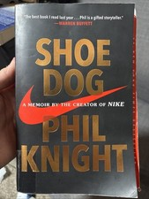

Library › Business & Startups
Shoe Dog — Summary & Key Lessons

The creator of Nike bares it all — a memoir of near-bankruptcy, crazy ideas, and the team that built an empire from a car trunk.
📖 OPEN THE FULL INTERACTIVE BREAKDOWN →🌐 Read it in Hindi, Hinglish, Gujarati, Tamil & 22 more languages — free, with audio.
💡 The Big Idea
In 1962, 24-year-old Phil Knight borrowed $50 from his father to chase his 'Crazy Idea' from a Stanford paper: high-quality, low-cost running shoes imported from Japan. Shoe Dog is the unvarnished story of what followed — selling shoes from a Plymouth Valiant's trunk, betrayal by his Japanese supplier, banks that cut him off at every growth spurt, a federal customs bill designed to kill the company, and the ragtag 'Buttfaces' (a paralyzed runner, an overweight accountant, a mail-order eccentric) who built Nike anyway. It's the anti-LinkedIn startup memoir: no frameworks, no certainty, just relentless forward motion — and the lesson that growth eats cash, belief must outrun evidence, and the crazy ideas are the ones worth your life.
🧠 The 5 Key Lessons
Lesson 1: The Crazy Idea: Start Before the Plan Is Ready
1962: The Beginning
Knight's origin is gloriously unqualified: a mediocre college runner with an unread MBA paper arguing Japanese cameras had disrupted German ones — so Japanese shoes could disrupt German (Adidas/Puma) dominance. His move wasn't a business plan; it was a plane ticket: he flew to Japan at 24, walked into the Onitsuka company unannounced, claimed to represent 'Blue Ribbon Sports' (a company that did not exist — he invented the name in the meeting), and asked for distribution rights. The deeper teaching is his father's blessing logic and Knight's own creed: life is short, the crazy idea was the only one that made him feel alive, and the only failure that's fatal is not starting. 'The cowards never started and the weak died along the way — that leaves us.'
📖 Example: The Onitsuka meeting is entrepreneurship's great bluff: asked which company he represented, Knight — panicking, ribbons from his bedroom wall flashing in memory — said 'Blue Ribbon Sports of Portland, Oregon.' The executives nodded; samples were promised. He… Read the full example →
⚡ Do this: Identify your Crazy Idea — the one that makes you feel alive and slightly embarrassed. Take one physical, irreversible step toward it this month (the ticket, the call, the registration) before the plan feels ready. The plan never feels ready.
Lesson 2: Growth Eats Cash: The Permanent Crisis
1965–1975: The Banking Wars
Shoe Dog's most educational thread is the one business schools understate: Blue Ribbon DOUBLED sales every single year — and was perpetually days from bankruptcy, because growth consumes cash faster than profits replenish it. Every dollar was pre-spent on the next, bigger shoe order; banks (in an era before venture capital, when Oregon law and banking culture despised leverage) saw a company with no cash reserves and repeatedly cut him off. Knight's counterintuitive conviction — pressed against every banker's lecture — was that stopping growth was the real death: in a market this hungry, the slow company loses everything to the fast one. The tightrope: he financed an empire on trade credit, a Japanese trading house (Nissho), and nerve — and the day First National finally dumped Blue Ribbon and the FBI was mentioned, Nissho's man audited the books, found Knight had been honest (if terrifying), and paid off the bank entirely.
📖 Example: The 1975 crisis is the chapter to memorize: Blue Ribbon, juggling payments, bounced checks across the country when a single wire was delayed — payroll checks, supplier checks, everything. Employees' mortgage payments failed; the phone melted; the bank… Read the full example →
⚡ Do this: Learn Nike's math before living it: track your cash conversion cycle (money out for inventory → money back from sales). If you're growing, forecast cash weekly, not monthly — and build the Nissho relationship (a lender/partner who trusts your books) BEFORE the crisis, because during it is too late.
Lesson 3: The Buttfaces: Hire Misfits, Give Them the Wheel
The Team Chapters
Nike's founding team violated every hiring manual: Jeff Johnson, a shoe-obsessed letter-writing eccentric who became employee #1 and ran stores like temples; Bob Woodell, a promising runner paralyzed in an accident, who became the operational spine; Delbert Hayes, an overweight, chain-smoking accountant with uncanny financial instincts; and Bowerman, a track coach who destroyed waffle irons prototyping soles. They called themselves 'Buttfaces' — the name of their shouting-match retreats where rank meant nothing and any idea could be attacked. Knight's management philosophy, borrowed from Patton: 'Don't tell people how to do things, tell them what to do and let them surprise you with their results.' He answered almost no letters (Johnson's hundreds of memos famously got silence), gave almost no praise — and the misfits, given total ownership of their domains, built the company for him.
📖 Example: Johnson embodies the system: unpaid, un-thanked, and micromanaged by no one, he opened the first retail store on his own initiative, turned it into a runner's community hub (photos, letters, fan mail with customers), invented the mail-order operation, moved… Read the full example →
⚡ Do this: Hire (or ally with) one person whose résumé is wrong but whose obsession is right. Then manage like Knight-via-Patton: define the outcome, hand over the domain completely, and bite your tongue on the how. Judge the surprises, not the process.
Lesson 4: Betrayal Into Rebirth: When Your Supplier Becomes Your Rival
1971–1972: The Split with Onitsuka
For years Blue Ribbon lived at a supplier's mercy: Onitsuka shipped late (killing seasonal sales), threatened the distribution rights annually, and — Knight discovered by literally rifling a visiting executive's briefcase — was secretly courting replacement distributors. The forced pivot became the founding of Nike proper: with the Onitsuka relationship doomed, Knight secretly commissioned his own manufacturing (via Nissho's factories in Mexico and Japan), launched the Nike brand with Johnson's dream-name and a $35 logo — the Swoosh, from Portland State student Carolyn Davidson ('I don't love it, but it'll grow on me') — and executed the double game until Onitsuka discovered it and sued. The courtroom climax vindicated him; the settlement and verdict freed Nike to become itself. Lesson stack: never let one partner own your existence; when betrayal is coming, pre-build the alternative; and the crisis that looks like death is usually the birth.
📖 Example: The briefcase scene is the memoir's most human confession: alone with Onitsuka executive Kitami's briefcase during a visit, Knight opened it — and found the list of rival distributors being courted. He put it back, said nothing, and began building Nike in… Read the full example →
⚡ Do this: Audit your dependencies: any single supplier, platform, or client that could kill you with one letter deserves a quietly pre-built Plan B this quarter. And keep Johnson-grade records — the boring files win the wars.
Lesson 5: The Finish Line Isn't the Point
1975–1980 & Night Notes
The final act stacks the near-death hits: the bounced-check crisis, then the U.S. government's $25 million customs bill (a competitor-lobbied 'American Selling Price' ruling designed to execute Nike) — fought and settled at $9M — then the 1980 IPO that made Knight one of America's richest men overnight. His reaction to that morning is the book's soul: no celebration, no purchase — just the thought that it 'was never about the money' and immediate grief that Bowerman wasn't beside him. The closing meditation, written in his seventies: regrets about time not spent with his sons (one of whom died young), letters finally answered, and the distilled advice — the point was never the shoes; it was the daily fight beside people you loved for something you believed mattered. His summary of everything: seek a calling over a career, expect the setbacks to be the story, and 'sometimes you have to give up. Sometimes knowing when to give up... is genius. Giving up doesn't mean stopping. Never stop.'
📖 Example: The IPO scene's arithmetic vs. its emotion: after 18 years of sleeping on the razor's edge, Knight's stake was suddenly worth $178 million — and he reports feeling mostly quiet sadness and the urge to call the old team. Contrast with the memoir's tenderest… Read the full example →
⚡ Do this: Write your own two-column audit now, not at seventy: what the ambition is building, and what it's currently costing (people, health, presence). Rebalance one line item this month — the empire will survive the missed meeting; some things don't survive the missed years.
✅ 5-Step Action Plan
- Take one irreversible physical step on your Crazy Idea this month.
- Track cash weekly; build the trust-lender relationship before the crisis.
- Recruit one obsessed misfit; hand over the domain completely.
- Pre-build Plan B for your most dangerous dependency.
- Run the two-column audit: what it builds vs. what it costs.
💬 Best Quotes from Shoe Dog
- “The cowards never started and the weak died along the way. That leaves us.”
- “Let everyone else call your idea crazy... just keep going. Don't stop.”
- “Don't tell people how to do things, tell them what to do and let them surprise you with their results.”
Interactive version: mark lessons as read, listen in your language, share quote cards.